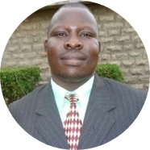

Pius Odhiambo
Mr. Pius Odhiambo was born, raised and received his early education in the Western part of Kenya in the
East Coast of Africa. He attended Uyundo Kindergarten, Lwero Primary School and Ukwala High School in
Western Kenya before joining Kenyatta University in Nairobi, Kenya in October 1996.
He graduated from Kenyatta university on Friday October 13, 2000 with a Bachelor’s degree in Science
Education ( Mathematics & Physics). After his graduation he worked with Teachers Service Commission of
Kenya for 10 years.His last duty station in Kenya was Olkejuado High School in Kajiado County where he
worked as a Physics teacher as well as the Head of e-learning department in the school.
He later relocated to the United States of America and joined University of Maryland University College
in the outskirts of Washington DC, USA and graduated in May, 2017 with Masters of Science in Information
Technology ( Database Systems Technology Specialization).
He also hold Graduate Certificate in Information Assurance from the same University.
Certificate in Computer Applications and Internet from African Virtual University.Mr. Pius attended the
highly competitive six months bootcamp for Certificate in Data Analytics & Visualization from George
Washington University in Washington DC, USA.
He is currently a Doctorate of Science Student in Computer Science at Bowie State University .
After relocating to the United States he worked briefly as high school teacher before starting a career
in Data Engineering.
Mr. Pius Odhiambo is the 4th child in the family of Mr. and Mrs. Lucas and Selestina Odhiambo.He is
married to Roselyne and God has blessed them with 2 children Effie and Edith.
Mr. Pius started his mentorship career in 1998 while a student at Kenyatta University .He mobilized few
students from the School of Education of Kenyatta University to offer tuition services to the community.
At this time the government had frozen employment for teachers and some schools were going without
teachers for core subjects.Students would go for months without being taught the core subjects.Mr. Pius
organized his classmates and started Survey Educational Trust Foundation ( SETF) whose signature project
was Survey Tuition School (STS). This was a holiday school that supplemented the great job teachers were
doing at school. Besides this the holiday school presented unique opportunity to teacher trainees to
gain experience in the field while undergoing training. STS recruited first year Bachelor of Education
students at the University and then offered them employment where they can horn their skills as teachers
and at the same time earn money for their day today upkeep as they study.We later extended this service
to Diploma Teachers Colleges and they were very effective. They would work under experienced teachers
before being left on their own.STS gave them leadership roles such as Head of subjects, heads of
Departments, Assistant Principal and Personal Assistant to the Principal. Through this arrangement STS
mentored thousands of high school students to a successful academic pathway. Some of these students were
on the verge of dropping out of school. Through this initiative several teachers were mentored and it
reached a point when STS could send teachers to schools in the villages and be employed by TSC. These
schools were less attractive to applicants.Some of the teachers also got the opportunity to work in
diaspora in countries such as Southern Sudan, Republic of Sychelles, Botswana, South Africa, United
States, Britain, Germany, Canada, Australia among others.
Mr. Pius took the art of mentorship to his new home town in the City of Silver Spring, in the State of
Maryland, United States. Here he has worked with a local church ( LifeSource Church For All Nations)
under the stewardship of Pastor Retired Satellite Engineer Peter and Dr. Anne Osano to develop
International Youth Mentorship Program ( LSCFAN Annual Youth’s Day) and Kiswahili Tekelezi. Mr. Pius
Odhiambo is currently working with a number volunteer mentors in Kenya to develop Mapishi Kikwetu Brand
for Kenyan Immigrants in diaspora and Kiswahili Tekelezi conference where he intends to mentor top
achievers / innovators at the village level gain global recognition as they solve pressing problems such
as unemployment and ineffective communication skills in Kiswahili at the rural villages in Kenya using
home grown solutions.
Mr. Pius Odhiambo’s dream is work with well wishers in 6 countries that speak Kiswahili in Africa ( Kenya, Uganda, Tanzania, Rwanda, Burundi, and DR Congo) to build Kiswahili Tekelezi Leadership Academy to offer hybrid formal Education training center to train the rural communities in functional Kiswahili as well as Africans immigrants in diaspora. Kiswahili is the official language of African Union and yet only few countries in Africa speak and teach Kiswahili in their schools. This initiative will be powered by technolgy using Kiswahili Tekelezi by LSCFAN and Adopt a School initiative by well wishers and admirers of Kiswahili Tekelezi both locally and abroad.